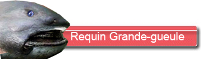
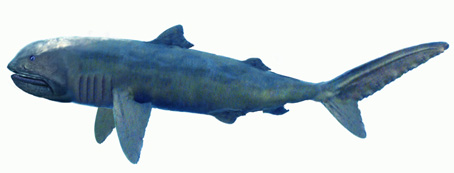
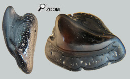

Plus qu'une légende presqu'un fantôme...

Dans les années 70, la découverte d’un requin échoué à Hawaii a fait sensation. Le requin "Grande-Gueule". Un nouveau requin planctophage particulièrement laid avec une bouche préhensible énorme. 
Même après toutes ces années, l’écologie de Megachasma pelagios est demeurée mal connue, mais il semble que ce requin disparaisse en journée dans les profondeurs (plusieurs centaines de mètres) et remonte la nuit pour se nourrir.
Megachasma erre alors la bouche ouverte et filtre les microorganismes en suspension dans l’eau. C’est le plus discret des requins filtreurs, mais surtout le moins spécialisé et probablement le moins performant. Sa survie jusqu’à nos jours reste étonnante.
Une grande gueule très discrête...
Comme chez tous les requins mangeurs de plancton, ses dents sont régressées, de petite taille et présentent des caractères assez particuliers mais aussi très variables.
Les caractères d’identification sont les suivants :
- 2 racines divergentes
- Une couronne avec une face labiale aplatie et l’autre face convexe
- On peut observer 0, 1 ou 2 cuspides latéraux. Cette originalité est encore observable sur les dents récentes de M. Pelagios.
- Et surtout la couronne se développe latéralement à la racine et a tendance à s’orienter parallèlement à l’axe de la racine.
 La connaissance de ces dents a diffusé dans le milieu paléontologique, et les chercheurs ont fini par réexaminer des dents atypiques dans les boites de collection pour essayer de reconnaitre ce requin extraordinaire. Aux Etats Unis, des dents fossiles ont été identifiées il y a une vingtaine d’années et pour ce qui concerne l’Europe c’est plus récemment qu’on a fini par reconnaitre des dents fossiles en Belgique, en Grèce et enfin en Allemagne. Megachasma reste cependant très rare.
La dent présentée ici n’est pas très caractéristique des dents de Megachasma à cause de sa couronne très trapue et de sa racine en forme de galette. Mais à l’examen, certains spécialistes de requins pensent pourtant qu’une assignation à Megachasma est la plus pertinente.
Megachasma est devenu une des coqueluches des collectionneurs de requins-fossiles.
|